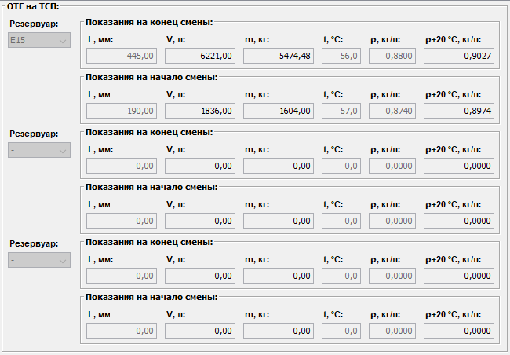
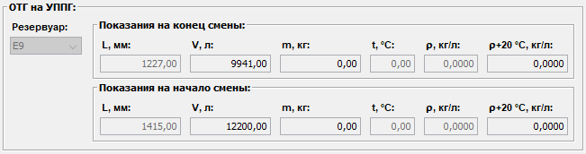

Описание области данных "Производство ОТГ"
Область данных "Производство ОТГ"
делится на две подобласти:
ОТГ на ТСП
.

Данные вводятся вручную пользователем по результатам замеров в начале и конце смены взливов, плотностей и температур в резервуарах,
в которые осуществлялась отправка ОТГ.
При выборе рабочей емкости из выпадающего списка и введеном взливе в этой емкости, объем ОТГ в этой емкости определяется автоматически.
При вводе плотности ОТГ в резервуаре, если выбрана рабочая емкость и введен взлив - масса ОТГ в этом резервуаре вычисляется автоматически.
Если при этом уже введена температура в резервуаре, то плотность ОТГ при +20°С вычисляется автоматически.
При вводе температуры ОТГ в резервуаре, если уже была введена измеренная плотность ОТГ, то плотность ОТГ при +20°С вычисляется автоматически.
Все операции и вычисления, связанные с производством ОТГ, применимы для все резервуаров, используемых для отгрузки ОТГ в течение смены.
Суммарный объем и масса произведенного ОТГ по всем используемым резервуарам автоматически вычисляется и отображается в соответствующей области
данных по производству ОТГ в области приложения Итого за смену.
При этом плотность ОТГ принимается средняя от общего произведенного ОТГ.
Процент производства ОТГ за смену в отношении к массе переработанного сырья принимается от суммарной массы произведенного ОТГ.
ОТГ на УППГ
.

Данные вводятся вручную пользователем по результатам замеров в начале и конце смены взливов, плотностей и температур в резервуаре Е9.
При вводе взлива в Е9, объем ОТГ в Е9 определяется автоматически.
При вводе плотности ОТГ в Е9, если введен взлив - масса ОТГ в Е9 вычисляется автоматически.
Если при этом уже введена температура ОТГ в Е9, то плотность ОТГ в Е9 при +20°С вычисляется автоматически.
При вводе температуры ОТГ в Е9, если уже была введена измеренная плотность ОТГ в Е9, то плотность ОТГ в Е9 при +20°С вычисляется автоматически.
Объем и масса ОТГ в Е9 на показатели и процент общего производства ОТГ не влияют.